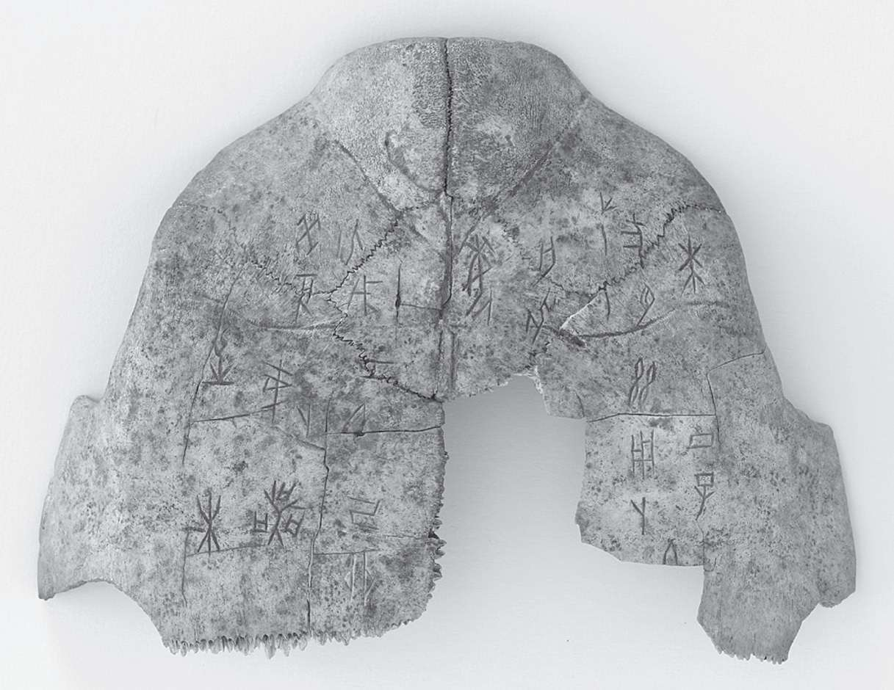
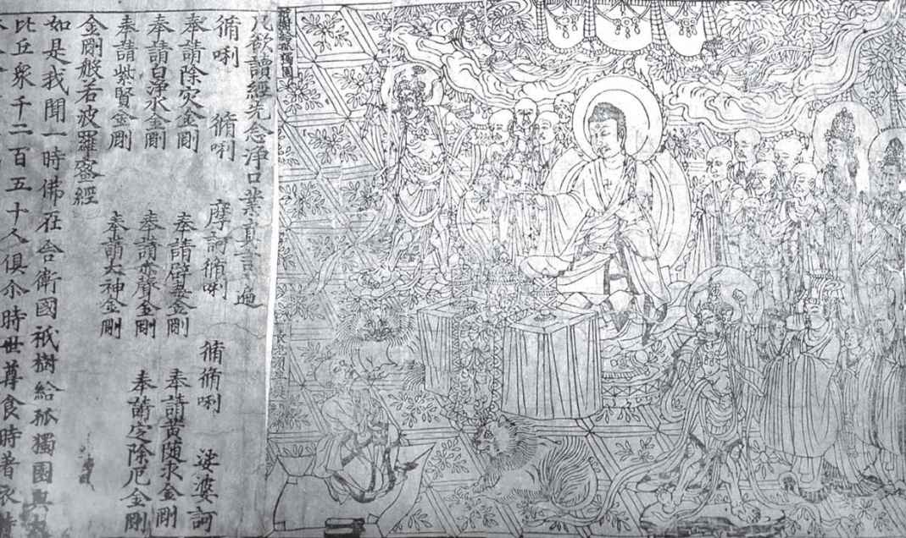
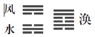
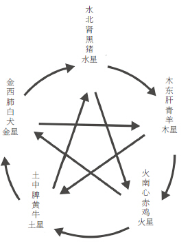

中国文学中的求知之路有时会令人惊讶。以传说中的智者庄子（约前369-前286）命名的文集会让偏爱直觉领悟的读者眼前一亮。庄子和名家的惠子游于濠梁之上时曾有下面一段对话：
庄子先是用惠子本人的逻辑来反驳，然后却提供了通向智慧的另一条路径。正如惠子即使不肯承认，其实也知道庄子所知，庄子同样能感觉到鱼的快乐。对名家而言，语言是交流的唯一工具。而在庄子看来，既然他和鱼同属一个宇宙，他就可以和鱼感同身受。物我之间的此种感应意味着不断扩展人的视野，这正是《庄子》的一则寓言中河伯所收获的道理。河伯游至北海，方知此前所见只是一隅。北海若评论道：“井蛙不可以语于海者。”
中国思想的各大流派都渴望更加辽阔的视野，最受爱戴的诗人、乐天的政治家苏轼（1037-1101）最精彩地表达了这种向往。在《前赤壁赋》中，苏轼记述了泛舟长江的一次夜游。当饮酒的宾客途经一处著名的战争遗址时，气氛变得忧郁起来。此地的兵败事实上决定了汉朝覆亡的命运 [1] ，所以众人不免谈起了无常与恒常的话题。应当如何看待历史上那些王国的终结？一位宾客不禁哀叹人生的无足轻重：
为了解开朋友的心结，苏轼以盈亏不止的月亮和奔流不息的江河为例，说明自然也有恒常的一面，应该更达观地看待变化：
苏轼在11世纪关于无常与恒常的沉思触及了中国文学想象中的一个核心主题。人生如此短暂，我们该如何应对？时间流逝的忧虑让得失荣辱的问题，出仕为官的责任以及对友谊、家庭和种种成就的追求都变得格外紧迫。文学文化起到了帮助人们探讨这些问题和欲望的作用，这种对人生抱负的关注也能指导他们如何面对时光中的变迁。按照公元前4世纪晚期《左传》的说法，“言”是实现“不朽”的三条途径-“太上有立德，其次有立功，其次有立言”-之一。
传道：“文”的力量 [2]
按照西方的标准，中国文献之古老令人震惊。虽然现代汉语和上古汉语的差异堪比英语和拉丁语的差异，今日的专家仍能解读商代（前1600-前1046）遗留下来的刻在龟甲羊骨上的汉字。这些用于问卜的甲骨文由单个的字组成，神的回答则要根据炙烤之后骨头上形成的裂纹来揣测。
这些文字成了中国文化的基石。虽然字形字义经过了漫长的演变，今日的中国人仍在使用古书里的字，中国的核心传统能凝聚至今，书写体系的延续性是关键。整片大陆上书写体系的统一克服了不同地区不同方言之间的巨大差异，确保了沟通的顺畅。许多方言在口头上的差异不亚于德语和英语的差异。 [3]
中国能历经三千余年依然屹立，或许更应归功于文学传统，而不是政治史。和罗马帝国不同，中国在历次分裂之后总能重新统一，部分便是依靠国民对“文”之力量的信仰，这个矛盾重重却韧性十足的文明得以维系，汉字居功至伟。作为与“武”相对的和平领域，“文”被视为治国的根本和促成文化和谐必不可少的手段。公元3世纪的陆机在《文赋》结尾称赞文学是连接不同时代的桥梁：“俯贻则于来叶，仰观象乎古人。”

图1 这片龟甲（约前1300-前1050上可以看见早期的汉字）（甲骨文）
在中国人的心目中，文学不仅是某个现实世界或理式世界的镜像 [4] ，而是世界借以生成的有形手段。“文”的模式被视为自然结构之“理”的具体呈现，文学在传递自然和伦理之“道”时发挥着关键作用。
因此，精心创作的文学就可让人深信，宇宙秩序森然，并且内具道德法则。这种信念的力量后来体现为家喻户晓的“文以载道”四个字，所以典籍和评注典籍的学者才在中国文化里居于中心地位。圣人孔子鼓励弟子在履行道德责任之余努力学文，这种学习被视为出仕者所应接受的基本教育。
虽然“文学”后来成了与英文literature对应的中文词语，“文”的词源义却是“纹”，例如织物的花纹。与西方“博雅学科”（liberal arts）的概念相似，“文”可以指任何有确定模式的艺术体裁，“文字” [5] 可以很好地涵盖早期中国的广义文学概念。古希腊罗马世界认为博雅学科是自由人应当接受的教育，儒家也相信，要培养仁德，文学最为重要。领悟宇宙内在的秩序无须牧师或其他中间人，但老师和文献必不可少。
文人
或许只有在中国，人们才如此自觉地把文学当作一种集体事业。阅读和创作让个人融入了人类的永恒长河中，士大夫阶层也把他们的特权理解为一种沉重的责任。因为相信自然与伦理之道都潜藏在反复出现的模式中，所以他们强调识别模式的能力，这样便形成了一种强烈的历史意识。
在周朝（前1027-前256）的衰落期，反观历史变得日益迫切。铁器的发展改变了战争形态，战国时期（前475-前221）军事强盛的封建诸侯国纷纷吞并邻国，最后西方的秦国建立了中国的第一个大一统帝国（前221-前207） [6] 。（英语表示中国的词China就是源于“秦”的音译。）
秦国成功的秘诀之一就是建立了一套让有才华的文人担任官职的行政体系。在这个新兴士大夫阶层获取政治影响力的过程中，秦国在书写文化和政治之间锻造了一种延续至20世纪晚期的联系。在公元605-1905年之间的13个世纪中，政府大多数时候都实行以研习古典文献为基础的科举考试，从而强化了这种联系。
由于古文颇为艰深，只有士大夫这个精英阶层掌握了读写的能力。学习读写需要专人教授，还需要时间和获得图书的途径，只有少部分人有这样的经济条件。在宋朝（960-1279）的印刷术大幅提高识字率之前，大多数作家都属于统治的官僚集团。这些文人阅读的经典库相对固定，共同的教育背景使得他们的凝聚力和政治势力超过了其他国家的类似群体。文人需要统治者的扶植，统治者也需要文人评注古代典籍，为政权的合法性辩护。
经典
尽管秦始皇（前221-前210年在位）的焚书行动毁掉了法律和技术书籍之外的其他文献，由于有一些史书逃过劫难，保存于其中的许多先秦文献仍得以流传下来。将精选出来的文献尊称为“经”提高了这些早期著作的声望。它们通过后世累积的传、疏、注不断演化，这些阐释多半是为特定的统治者或政治方向寻找理据。
自汉朝（前206-220）以来，“五经”专指《易经》（占卜书）、《诗经》（最古老的诗选）、《书经》（上古文告谕令汇编）、《春秋》（编年史）和《礼记》（三部礼书的合集） [7] 。由于公元前2世纪发明了纸，这些经典被刻在石碑上，然后用纸拓印，几乎所有中国文人都将它们熟记于心。
到了4世纪，经典著作的范围扩大了，文献被分为了四类。这种分类法把“经”排在第一位，其次是“史”，然后就是“子”（思想家或者后世所称的哲学家）和“集”（文学选集）。“子”部著作通常由后人汇编而成，内容多是某位学派代表人物与门徒或辩难者的对话，书里往往有许多隽语妙言、精彩对话、寓言和掌故。这个类别也包括了专门的医学、军事和宗教著作，包括道教和佛教典籍。后世称为小说的作品一般没有资格进入这四部，因为经史子集的要义都在于传道。
围绕道的论争在先秦时代就开始了，由于当时缺乏一个强有力的政治核心，职业的思想家和纵横家得以崛起。这些胸怀天下的文人竭力游说诸侯，改弦更张，以实现和平与良治，那些无法出仕的学者则设馆授徒。因为他们，战国时代的中国思想交锋分外活跃，以“百家争鸣”而闻名。所谓的百家之中，由于史学家司马谈（卒于前110年）的确认，有六家对后世产生了持久影响。除已经广为人知的阴阳家、儒家和墨家外，司马谈将另外三家称为法家、名家和道家。
不久之后，佛教也深度参与到人生正道的论争中。发源于印度的佛教成了中国思想的重要一脉，西土传来的佛教故事也成了中国最早的叙事作品。到了公元2世纪，释迦牟尼的韵文传记和种种佛教寓言已被译成汉语，这些故事和经文都成了文学传统的重要元素。（“经”的尊崇名号也用来指佛教典籍。）佛教的空、缘、业、轮回等观念经常与儒家和道家的思想融合，并且很快扎根，成为底层的信仰。在公元220年汉朝灭亡后的分裂局面下，这些信仰更吸引了社会各阶层。到了唐朝（617-907），重新统一的中国武功强盛，以包容之心广纳异国人士、异国思想，佛教的主题与文学体裁已经对中国文学的许多重要变革做出了贡献。20世纪初，在中国西部的敦煌石窟中发掘出近四万件11世纪以来就被尘封的手稿，让我们对这种影响有了全新的认识。
各大派别的思想虽各有侧重，但也有许多共同的信仰，例如都相信一种基于天、地、人相互融合的终极和谐之道。每派都认为其他各派的教义并非错误，而是只得到整体之一隅。经过几个世纪的相互辩诘、相互滋育，它们不断彼此渗透，那些共同关心的话题便成了文学传统的主流。中国文学的基础可以描述成一些互相交叠的求道之法。
易之道
中国的语言和文学有一套丰富的词汇来探讨变化的精微过程。印欧语言通常突出名词、本质与物质，古汉语却更看重动词、过程和情境。中国文学把历史的转型看成缓慢变化进程的最终结果，所以经常拒绝给出精确的定义和静态的范畴。
对变化的强调可以追溯到《易经》，它在公元前10世纪成书时只是一本占卜指南。“算命术”的古老之根竟逐渐长成了世界文学中一棵主要的智慧树（它以“易经”的音译为英美人所知，这在中文书里极为罕见）。

图2 敦煌附近出土的文物中有世界现存最古老的印刷书籍，公元868年雕版印刷的《金刚经》
这部经典的核心部分是六十四则短的预言，每则预言分别对应由六爻组成的一个卦象。 [8] 阳爻是实线，象征运动，阴爻是虚线，象征顺从和静止，合起来的卦象代表宇宙循环演替的各个阶段。用这些图案来阐释，宇宙就显示出某种终极的秩序。这六十四个卦象是生命关键节点的隐喻，借助它们提供的这个符号宇宙，个人可以分析自己的困境，皇帝可以测算治国术的吉凶。
《易经》的开始两卦-代表天的乾卦和代表地的坤卦-分别对应于原初的阳和原初的阴，而阴阳的词源义分别指山背阴和向阳的一面。正如光与影在山脊上交汇，激发的阳和回应的阴也在自然的因缘际会中彼此作用。这些偶然因素虽非人力所能左右，但在中国人看来，却遵循着有规律的模式。如果敏锐地意识到这些运行机制，人就会对自然倾向背后的“势”生出敬畏之心，也会深信人具备因势利导的能力。下面以第二卦为例，说明《易经》如何判断卦象：

图3 “涣”是六十四卦之五十九卦，上“风”下“水”，可以理解为僵硬状态的解除或者懊悔情绪的化解
因为卦象代表的是不断演化的“势”和长跨度的影响，卦辞和爻辞就可以在一定程度上摆脱当下的冲动和压力，这样《易经》就为书面文化如何指引伦理确立了范式。
《易经》的解经部分通常称为“十翼”。虽然相传是孔子所作，它们却用了孔子身后的阴阳家理论，创作时间应接近公元前3世纪。根据这样的理论，阴阳无休止的相交产生“气”，“气”是宇宙的生命力，体现在呼吸、空气、能量和物质中。这种生生不息的力量在金木水火土五行中循环，五行又分别与五脏、五色、五臭和中国传统音乐的五音相联系。按照感应的原则，每个领域的变化都会对其他领域的同一种“行”产生影响 [9] 。这种交互感应的宇宙学叫“阴阳五行”，它促使人们尊重变化不息的生态系统，也鼓励人们吸收不同学派的思想。正如阴阳的平衡随四季而变，政府的政策也可因时制宜。
基于这种整体性的世界观，中国人对治乱的循环更替，对刚与柔、动与静、言与默、显与隐的相互作用都有敏锐的体察。正如乐与哀相互渗透，直接与迂回也分别适合不同的形势。《孙子兵法》（约前4世纪）关于军事对抗的讨论，太极拳和气功的练习，中医的寒热理论，中国诗歌含蓄蕴藉的风格，都反复体现了这条原则。

图4 此表展示了与五行相对应的各种事物，气在五行中循环。
在《易经》流传过程中，一些影响巨大的道家和儒家注疏也塑造了后世读者的理解，敬畏自然变化因而成为中国思想的主流。佛教对无常的深刻领悟强化了这些早期学派重视变化的倾向，它在山水诗中的痕迹尤为明显。在此类诗歌和骈文中 [10] ，语法和意义的对仗经常反映了各种对应模式。在最能体现人类感觉之易逝的绝句里，也能见到这个框架。以李商隐（813-858）的《登乐游原》为例，第一句的“向晚”引入了时间的运动，它不受人的控制，而第二句的“驱车”描绘的却是人可以控制的穿越空间的运动。
向晚意不适，
驱车登古原。
夕阳无限好，
只是近黄昏。
与此相似，结尾提及“黄昏”，呼应开篇的“向晚”，形成一个循环运动，让人联想起太阳每日的回归。然而黄昏的迫近也暗示抒情主人公是微不足道的，无垠的日落美景尤其强烈地反衬出人类生存的诸多局限。通过这种方式，作品聚焦于具体的景色，却表达了抽象的情感。美好一天的终结所激起的感伤情绪，抒情主人公对自身生死的意识，乃至唐代衰落的预感，形成了共振。
仁之道
与这些阴阳家的理论大体同时，中国也发展出了一种强大的伦理人本主义传统。这一古典传统最初由孔子创立，后被一群自命为其传人的儒者进一步发挥。由于儒家强调，若要实现社会的和谐稳定，必须遵循传统，所以与其按照西方现行的译法称之为“孔夫子主义”（Confucianism） [11] ，不如换上“崇古主义”（traditionalism）的名号。
在《论语》（大概于公元前3世纪成书的箴言和对话汇编）中，孔子主要讨论现实的利害关系。它虽然不是一部系统的专著，却是了解这位先师教诲的权威文献，书中的孔子是致身于善与诚的睿智思想者。孔子乐于承认，“不知”亦是某种形式的“知”，所以不肯谈论怪力乱神与死后之事，而只愿探讨他所能知道的这个世界。与推崇自然之道的阴阳家和道家不同，孔子及其门人强调的是实现人际和谐的伦理之道。他对当时的战乱纷争和道德沦丧深感忧虑，所以怀念过去的世代，尤其崇拜周公。
孔子将周公提出的“仁”作为其学说的核心概念。“仁”在英语中有时译作“人心”（human-heartedness），或者干脆译作“人性”（humanity），但就词源而言，它由“人”和“二”组成，反映了孔子的一个坚定信念：人性之养成有赖于人与人的关系。在孔子看来，这些关系的基石便是亲族纽带与孝的品格。以它们为中心，我们便可以将仁心推己及人。“夫仁者，己欲立而立人，己欲达而达人。”子贡问他：“有一言而可以终身行之者乎？”孔子回答：“其恕乎！己所不欲，勿施于人。” [12]
孔子认为，君子修养的目标是通过践行周朝初年设定的礼法来促进社会的和谐与政治的清明。在仪礼往来中，音乐和文学至为关键，而就培养美德而言，首要的任务则是让“言”与“事”相符合，也就是孔子所说的“正名”。这样根据儒家的教义，文学就在培养美德的过程中居于举足轻重的位置。孔子很欣赏《诗经》的音乐性，多次申明其作品在道德和辞令修习中的价值：“不学诗，无以言。”他并不觉得学习伦理之道是无趣之事：“知之者不如好之者，好之者不如乐之者。” [13]
人培养仁、义、礼就可改进世界，孟子（前372-前289）对此更为乐观。论对儒家的塑造之功，以他名字命名的《孟子》堪与《论语》相比。孟子宣称人皆有“四心”-恻隐之心、羞恶之心、辞让之心和是非之心，而且它们都与“浩然之气”（点燃道德勇气的强大能量）有关。人见到小孩将要坠井都有救他的冲动，见到他人受苦都有不忍之心，这些普遍的现象在孟子看来都表明，“人性之善也，犹水之就下也” [14] 。
孔子的另一位追随者荀子（约前300-前230）不同意孟子人性本善的观点。他认为人天性与社会不合，偏袒自己喜欢的人，甚至充满私心，所以相信只有教育和礼仪才能引导他们向善，并与他人和谐共处。韩非子（卒于前233）继承了荀子对性善论的怀疑，所以尤其强调外在规范。他认为以道德来约束行为是不可靠的，鼓吹创立严密的法律体系，建立强大的官僚统治机构，这个传统后来被称为法家。然而，即使荀子和法家也承认，历史上的先例能提供价值观的启示和行为的规范，这种信念强化了上述传统所共有的乐观看法：道德教育、自我修养和社会交往是有用的。如此的历史感孕育了一种致力于将文学与仕途相结合的“原教旨主义”诗学 [15] ，在中国影响巨大。
学之道
虽然在短命的秦朝（前221-前207），强调规范与惩罚的法家处于垄断地位，在长寿的汉朝（前206-220）， [16] 的思想者又重新回到古代典籍，在历史的先例中寻找道德修养的最佳途径。和编纂于汉朝的许多其他文献一样，《礼记》也显明了道德对学问的依赖。书中，孔子将各种美德的内化与特定经典的研习联系起来：
与此类似，广博的品质受益于历史（《书经》），大度的品质受益于音乐（《乐经》），诚实的品质受益于哲学：
为了给帝国统治提供合法依据，汉廷通过整理典籍和整合儒、道、阴阳三家来奖掖儒学。汉朝学者为五行感应说提供了一套道德说辞，这样就符合了孔子的教诲：人的行为遵循上天的旨意。他们认为，既然自然变化是气的变形，调节自身之气就是追求智慧理解的必由之路。与道家的手段不同，崇古的学者将学经视为调气的重要方法。
虽然从汉朝覆亡，历经南北朝的分裂，直至唐朝，道家、佛教和其他学派的影响同样重要，儒家在宋朝（960-1279）却恢复了中心地位。尽管宋朝重新统一了中国，并且在安史之乱（755-763）之后第一次恢复了中央集权的官僚体系，它却从未追求唐朝的强盛军力和开疆拓土的事业。鉴于唐朝毁于藩镇割据，宋朝皇帝重视文治甚于武功。为此目的，他们以儒家经典为内容，扩大了科举规模，以招募官员。于是，文学文化的影响力空前，由精英家族构成的士大夫阶层应运而生，他们的声望主要建立在文学素养和官位上。
在宋朝，一系列划时代的政治、社会和经济变化更新了人们对文学文化的认识。宋朝拥有当时世界上最大、最繁华、最先进的都市，所以它的文化也包括了一些全新的职业、手工产品和大众娱乐形式。在北宋（都城在北方商业中心开封），投身文学文化和进入仕途是彼此相依的，但在入侵者于1126年征服中国北方之后，宋在持续的战争威胁下残存，南宋末年的许多思想者已经把儒家思想变成了一种更个人化的道德哲学。
在儒家的文献中寻找确定的指南，一种新的学派-道学-发展起来，试图在许多彼此辩难的学派中确立权威。道学也称理学，英语世界则称之为“新儒家”，该派的宗师当推朱熹（1130-1200）。他以“理”为基础，大胆地将前人的各种学说创造性地整合成一个体系。
虽然朱熹在生前受到政治上的羞辱，死后他的理论却获得了正统地位，延续五百多年。根据他的思想，人生而禀有理之善，但物质之气却受制外物而变浊，为助人心重归天理，朱熹主张“静坐”与“格物”。理学的学者甚至比传统儒家更乐观地相信道德教育的效力，因而格外强调以文献研习来提升自我修养。
虽然后来的唯心主义新儒家学者王阳明（1472-1529）反对朱熹对理性知识的推崇，倡导知行合一的直觉知识，朱熹重视儒家经典学习的思想仍然是精英教育和科举取士的圭臬。入侵的蒙古人建立元朝（1279 [18] -1368）之后，曾停止科举考试，一度让文人失去了统一的教育内容。但从1313年恢复科举到1905年废除科举，所有的应试者研习的都是朱熹作注的《四书》-《论语》《孟子》《大学》《中庸》，正是他将其确立为理学的核心经典。
推翻蒙古统治后，明朝（1368-1644）的上层统治集团更加看重自己以文献遗产教育年轻一代的责任。为了增强文化的大一统，明政府以理学传统为基础重建了一个共同的经典库，甚至在北方的满族人建立清朝（1644 [19] -1911）之后这个正统也未动摇。清朝的统治者尤其忧心统治的合法性，所以在正统问题上更不敢松懈，他们的科举要求应试者写极其拘谨的八股文，而不是诗。清朝学者发展了实证的考据学，编纂了卷帙浩繁的词典、文集和百科全书，从而强化了理学的传统。通过《四库全书》（1773-1782）-3461部作品的汇编外加有详尽注释的书目，满族人将中国的文献传统据为己有，以参编的方式拉拢汉族学者，控制和保存朝廷许可的文献，而将可能威胁其统治的著作边缘化。这部丛书排除了戏剧和小说，对前现代中国文学的遗产影响深远。
自然之道
被后世称为道家的早期文献为另一种文学理论提供了基础。这些著作将自然形容为创生“万物”的橐龠，引导它的是“道”，或者永恒生灭循环所遵循的整体规律。道家的奠基文本是《老子》，它的别名《道德经》在西方更为流行。此书很可能成型于公元前3世纪，它记录了老子（约公元前6世纪）的思想，道家和道教的各个支派几乎都发源于此。这些玄奥隐晦的短章赞美顺从自然之道的行为（“自然”原义为“自己如此”，后来成为整个自然界的统称）。
《老子》极其怀疑人类将各种名称和分类强加于世界的行为，而推崇直觉理解。它认为一切形式的强制和掌握，包括心智的抽象概念，都只能让人远离大道，所以它倡导对“无”的体悟。正如“埏埴以为器，当其无，有器之用” [20] ，留白常为一幅画添美，自发的动作才是舞蹈的核心。这种推崇无为和虚空的思想对后来的中国诗画产生了深刻的影响。
道家的第二部奠基文本《庄子》用寓言直接批评强制性的努力。例如，一名年轻人因为喜欢赵人的步态远赴邯郸，竭力模仿却仍未学得，最后连原来走路的方式都忘了，只好爬回家去。《庄子》充满了这类讽刺性的故事、抒情性的寓言和各种文字游戏，因此可以称为中国最早的虚构作品。它的成书时间很可能在公元前4世纪，其中七篇《内篇》可能出自特立独行的怀疑论者庄周（约前369-前286）。和渴望出仕却最终安于授学的孔子不同，庄子对政治毫无兴趣。当楚王欲拜他为相时，他断然拒绝，并问了使者一个简单的问题：他们若是乌龟，“宁其死为留骨而贵乎？宁其生而曳尾于涂中乎？” [21]
庄子深刻地意识到“万物”（包括生物）的无限多样性，极其厌恶将一致性强加于世界的各种先入之见、道德教条、法律和制度。他看到事物命名的基础只是沿袭的陈规，所以反对儒家学者的道德教训。《庄子》拒绝用词语来塑造概念、制造类别，人为地区分是非、利害与他我，而鼓励读者去体悟混沌未分的整体。
面对现象的世界，庄子的态度是谦卑的，因此他分外相信神游。在自由、自发的运动中，人能够感受到自然之道，并且精微、超逸地回应自然的趋势。放弃刻意的控制，静心体悟自然，人就能驾驭六气（阴、阳、风、雨、晦、明）的马车。在庄子眼中，喜怒哀乐的情感变化只不过是“蒸成菌”，“日夜相代乎前而莫知其所萌”，“非彼无我，非我无所取” [22] 。然而，庄子却能尽其所能发现快乐，正如在濠梁之上的著名对话中，他坚称知鱼之乐。通过突出判断的相对性，这则寓言揭示了语言和交流的功用：它们不仅能创造知识和视角，而且能催生快乐和其他情感。
成千上万的改写足以证明庄子的寓言和道家的其他典故的深刻影响力。例如在《古风其九》中，诗人李白（701-762）就引用庄子来质疑各种俗世追求的价值：
庄周梦胡蝶，胡蝶为庄周。
一体更变易，万事良悠悠。
乃知蓬莱水，复作清浅流。
青门种瓜人，旧日东陵侯。
富贵故如此，营营何所求。
儒家诗学强调文学服务于政治教化，庄子却强调养生，开辟了另一个重要传统。和儒家推崇勤奋与学识不同，《庄子》赞美源自经验的智慧。庄子称许过粘蝉者、斫轮者、泳者，尤其著名的是在解牛时“以神遇而不以目视”的庖丁。由于他“依乎天理，批大郄，导大窾，因其固然，技经肯綮之未尝”，一把刀用了十九年才需再磨 [23] 。《庄子》中这类通过实践掌握的从容技艺远胜阅读古书。正如轮扁对勤学的桓公所说，既然古人已死，而且简单如斫轮的手艺都无法用言语表述，可见他所读的只是“古人之糟粕” [24] 。
汉朝灭亡导致人们对儒家的教条和制度建设深感怀疑，于是崇尚自然的观点渐渐深入人心。嵇康（223-262）的《养生论》、葛洪（284-364）的《抱朴子》之类的著作不再为政治教化服务，转而寻求个人的意义与精神的提升。这两本书都介绍了长生的秘诀。基于对《易经》《老子》和《庄子》的领悟，所谓的“玄学派”也发展起来。思想家们沉浸于这种神秘主义之中，试图通过静观自然实现与道合一。对厌倦了政坛的士大夫来说，自然在尘世的失意之外提供了一个家园、一个框架、一个广阔的视野。养成这种宏观视野还能让品鉴自然的人获得一种价值感。凝神赏观山水溪石，人可以理解动静的平衡，然后在创作中既呈现自然的秩序，也展示自己的修养。
情之道
求道也意味着应对感情和欲望的强大力量。从汉朝开始，“情”字才表示各种或强或弱的情感，它最初的意思是“诚” [25] 。这种“诚”的观念渗透在早期关于善的论争中：善是发源于人之本性，还是只能通过道德教育来培养。在回顾一生的各个阶段时，孔子称，“七十而从心所欲，不逾矩” [26] 。这则告白意味着，如果心正，欲望就能引导人做出符合道德的行为。孟子深信人心具有恻隐、羞恶、辞让、是非四端，所以认为人类的情感具有崇高性，其根基是真诚的向善渴望。按照他的说法，培养浩然之气以及勇敢和克制的美德，人就能强化自己的道德意图，避免心的干扰，并与宇宙产生感应。荀子虽然对人性不甚乐观，但也提倡控制过度的感情，以实现善的目的。因此，陶冶欲望与情感成为文学文化的一项核心功能。
当诗歌和其他文学形式发展为表达和调节情感的重要手段时，对微妙情绪的关注也成了诗歌理论的常规内容。“情”的地位日益上升，公元5世纪刘勰的《文心雕龙》（中国第一部系统的文学理论著作）便是证明：“人禀七情，应物斯感，感物吟志，莫非自然。” [27] 这种对情感的积极评价至今仍是中国思想的重要一脉，包括刘勰文本在内的这个传统认为情感是天然的倾向，是诗兴的基础，可以养气，可以帮助人实现风骨、通变、隐秀的平衡。文学之所以如刘勰所称“离离如星辰之行” [28] ，是因为文心可与天意相通。
然而，对于如何调节怨恨和其他负面情感，早期文献也表示出关切。《礼记》警告人们不要成为欲望的奴隶，在最著名的一章《大学》中，愤怒、恐惧、忧虑和其他强烈的情感被视为人遵循天理“正心”的阻碍。到了汉朝，学界开始将人之初的向善本性视为阳，将混沌难辨的情感视为阴。这种区分在后世学者中间更为流行，他们将心比作水，它平静的本性得于天理，但情感之流、欲望之波却会扰动它。
随着佛教的传播，人们愈发担忧情感搅乱心灵。佛陀宣扬的四圣谛告诫人们应警惕欲望的代价。人生充满痛苦，痛苦的根源在于欲望，这就是苦谛和集谛；若要减轻痛苦，人就必须消灭欲望，这就是灭谛。道谛则勾勒出八正道，其中“正念”的内容就包括抵制贪嗔痴的决心。
然而，泛滥的情感和欲望固然可能是积业的首因，“情”也被视作通往觉悟的途径。在中古时代（从汉至唐），一些哲学家受到道家的影响，主张弃绝儒家的礼法。他们指责礼法败坏了人性的本真，鼓励人们遵循自然界生机循环的天道。吊诡的是，与天道的融合也意味着摆脱个性和个人欲望的禁锢。这种悖论后来成为诗歌、戏剧和小说中的重要主题 [29] 。例如，在9世纪的传奇《杜子春》中，主人公在服了三颗丹药并踏上求仙之旅后，最终违反了恩公（一位道士）禁止他说话的命令，从而失去了长生不老的机会。在多次的试炼中，他都克制住了人的欲望和嫌恶，可是当他转世为一位女人，而丈夫因为不能忍受她永远缄默，泄愤杀死了襁褓中的孩子时，他（她）终于在爱心驱动下喊出了“不！” [30]
后来，越来越多的著作明确主张以情悟道。“情”被视为审美、想象乃至主体意识的源头，它所涵盖的范围不仅包括英语词语“爱”（love）的各种含义，还涉及外物对人的触动、各种情感和觉知。诗歌、小说、戏剧都认可“情”的价值，都倾向于将“情”而非“理”描绘成人类事务的驱动力。由于许多儒家学者对“情”的态度日益正面，相信它对培养儒教美德至关重要，“情”被擢升为整个民族的文化理想。这种对“情”的广泛兴趣既强调浪漫之爱，也突出爱国忠君之心，正因如此，大批汉族士人面对满族的征服与统治时选择了殉国。“情”的概念不断变动，表明在理解人与世界如何发生联系时，“情”是中心因素，而这些理解在诗歌（中国最受尊崇的文学体裁）里体现得最充分。